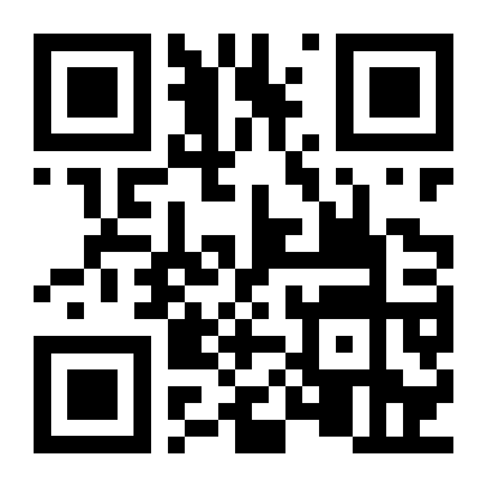
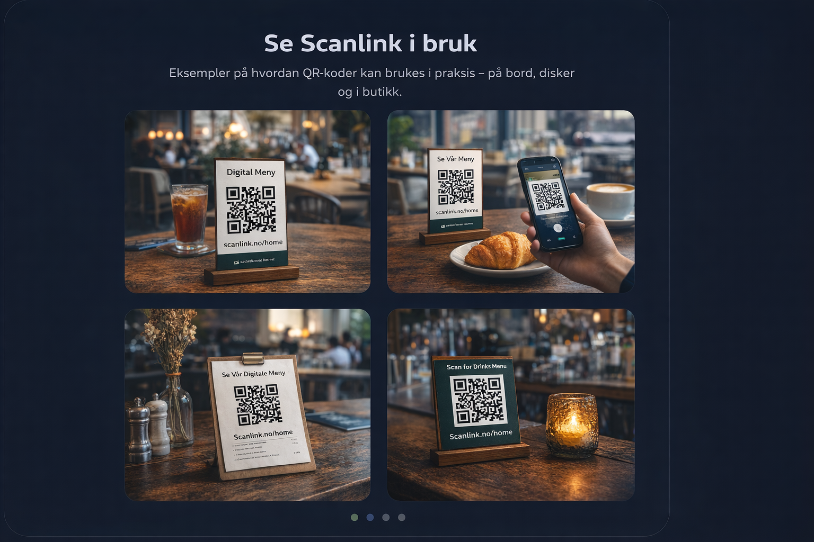

Én QR-kode.
Alltid oppdatert.
Scanlink gjør det enkelt å bruke QR-koder til menyer, kampanjer og informasjon. Du får én QR-kode, og vi sørger for at den peker dit du vil — også når behovet ditt endrer seg.

Dette må siden svare på
Når en potensiell kunde besøker Scanlink, må de raskt forstå hva det er, hvorfor det er nyttig, og hvordan det fungerer.
Hvem er Scanlink?
Scanlink er laget for bedrifter som vil bruke QR-koder uten teknisk stress. Målet er å gjøre det enkelt å dele riktig informasjon til riktig tid.
Hva er Scanlink?
Scanlink er en tjeneste som gir deg en QR-kode du kan bruke til menyer, kampanjer, praktisk informasjon, booking eller andre lenker du ønsker å dele med kundene dine.
Hva gjør Scanlink?
Vi lager QR-koden for deg og bestemmer hvor den skal lede, basert på hva du ønsker. Når behovet ditt endrer seg, kan innholdet bak QR-koden oppdateres uten at du trenger en ny kode.
Hvorfor bruke Scanlink?
Du får ikke bare en QR-kode. Du får en løsning som gjør det enklere å holde informasjon oppdatert.
Én kode over tid
Du slipper å lage nye QR-koder når menyen, kampanjen eller informasjonen din endres.
Mindre arbeid
Du sier hva du trenger. Vi håndterer oppsettet og endringene bak QR-koden.
Mer fleksibilitet
Den samme QR-koden kan brukes videre, selv om innholdet bak den blir oppdatert senere.
Det viktigste med Scanlink
Kunden får en QR-kode. Du bestemmer hva den skal brukes til. Vi sørger for at den alltid peker riktig.
Hva løser det?
Mange QR-koder blir fort upraktiske. Scanlink gjør dem mer nyttige og mer fleksible.
Vanlige problemer
- Du må lage nye QR-koder når noe endres
- Trykket materiell blir fort utdaterte
- Kunder kan få feil eller gammel informasjon
- Det blir mer jobb enn det burde være
Med Scanlink
- Samme QR-kode kan brukes videre
- Innholdet bak koden kan oppdateres
- Kundene kommer til riktig sted
- Løsningen er enkel å forstå og bruke
Hvordan fungerer det?
Enkelt nok for små bedrifter. Fleksibelt nok til å være nyttig over tid.
Du forteller hva du trenger
For eksempel en meny, en kampanje, en bookinglenke eller annen informasjon.
Vi lager QR-koden
Du får en ferdig QR-kode og en kort lenke som passer til bruken din.
Kunden scanner koden
Når noen scanner QR-koden, kommer de til siden eller innholdet du ønsker å vise.
Vi oppdaterer ved behov
Når du vil endre hvor QR-koden leder, kan vi gjøre det uten at du trenger en ny kode.
Hvem passer Scanlink for?
Løsningen passer spesielt godt for bedrifter som trenger enkel og fleksibel deling av informasjon.
Kaféer og restauranter
Del menyer, ukestilbud, allergiinformasjon eller bestillingslenker.
Butikker
Bruk QR-koder til kampanjer, produktinformasjon, tilbud og åpningstider.
Events og lokale bedrifter
Del program, registrering, informasjon eller aktuelle lenker med besøkende.
Hva får kunden?
En enkel løsning som gir verdi med én gang og kan brukes videre over tid.
Dette er inkludert
- En ferdig QR-kode
- En kort og ryddig lenke
- Oppsett tilpasset behovet ditt
- Mulighet for å oppdatere hvor QR-koden leder
- En personlig og enkel løsning
Verdien i praksis
Du får en QR-kode som kan fortsette å være nyttig selv om innholdet bak den endrer seg. Det gjør løsningen både enklere og mer praktisk for bedriften din.
Se Scanlink i bruk
Eksempler på hvordan QR-koder kan brukes i praksis – på bord, disker og i butikk.

Klar til å prøve Scanlink?
Fortell hva du vil bruke QR-koden til, så kan vi sette opp en løsning som passer bedriften din.
Ta kontakt